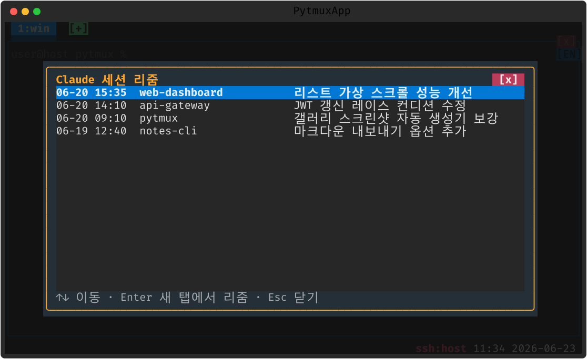

claude-resume
이 머신에 남아 있는 Claude Code 세션들을 시각·프로젝트·AI 제목 3열 목록으로 보여주고, 고르면 새 탭에서 claude --resume 으로 이어서 시작합니다.
여는 법
| 명령 | 설명 |
|---|---|
claude-resume | 세션 목록 팝업 열기 (별칭 claude-sessions·cr) |
↑↓ 로 고르고 Enter 로 새 탭에서 리줌, Esc 닫기.

메모
세션 목록은 ~/.claude 트랜스크립트에서 읽습니다. 프로젝트 디렉토리가 같은 세션이 여럿이면 시각으로 구분하세요.
끄기 · 제거
:plugins 관리 팝업에서 끄거나(가역), pytmuxlib/plugins/claude-resume/
디렉토리를 지우면(delete-to-disable) 명령·자동완성·메뉴 어디에도 나타나지 않고 조용히
사라집니다. 코어는 영향받지 않습니다. ← 플러그인 개요